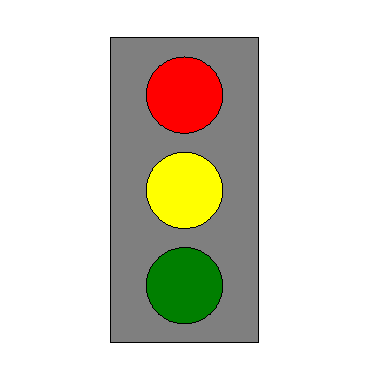

This is a simple example of how to create a new window and draw shapes in it. The WINDOW function allows you to draw a window without defining any data first. You can create the window and then use any of the graphics functions to populate it.
This example shows how to easily create a new window and then draw a stoplight using POLYGON and ELLIPSE functions.

The code shown below creates the graphic shown above. You can copy the entire block and paste it into the IDL command line to run it.
w = WINDOW(DIMENSIONS = [400, 500], LOCATION = [0, 0] )
stoplightback = [ $
[0.3, 0.9, 0.99000000], $
[0.7, 0.9, 0.99000000], $
[0.7, 0.1, 0.99000000], $
[0.3, 0.1, 0.99000000]]
base = POLYGON( stoplightback, FILL_COLOR = !color.gray )
red = ellipse(0.5, 0.75, FILL_COLOR = 'red')
yellow = ellipse(0.5, 0.5, FILL_COLOR = 'yellow')
green = ellipse(0.5, 0.25, FILL_COLOR = 'green')